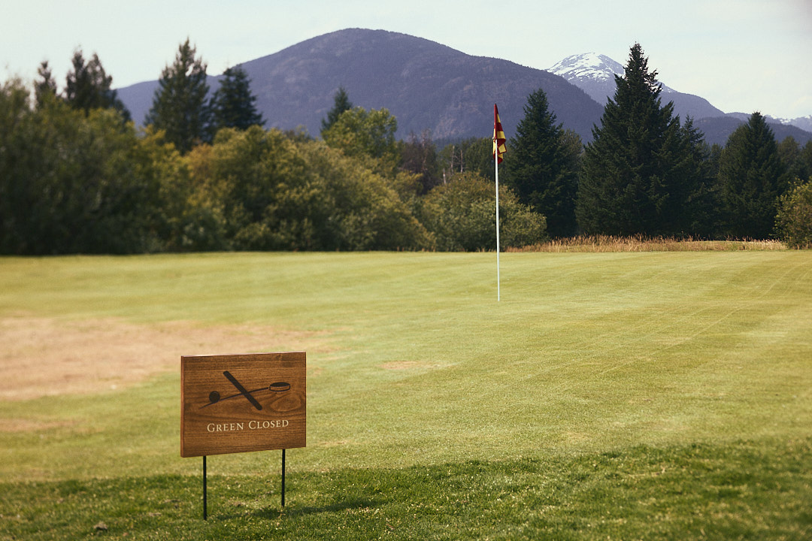
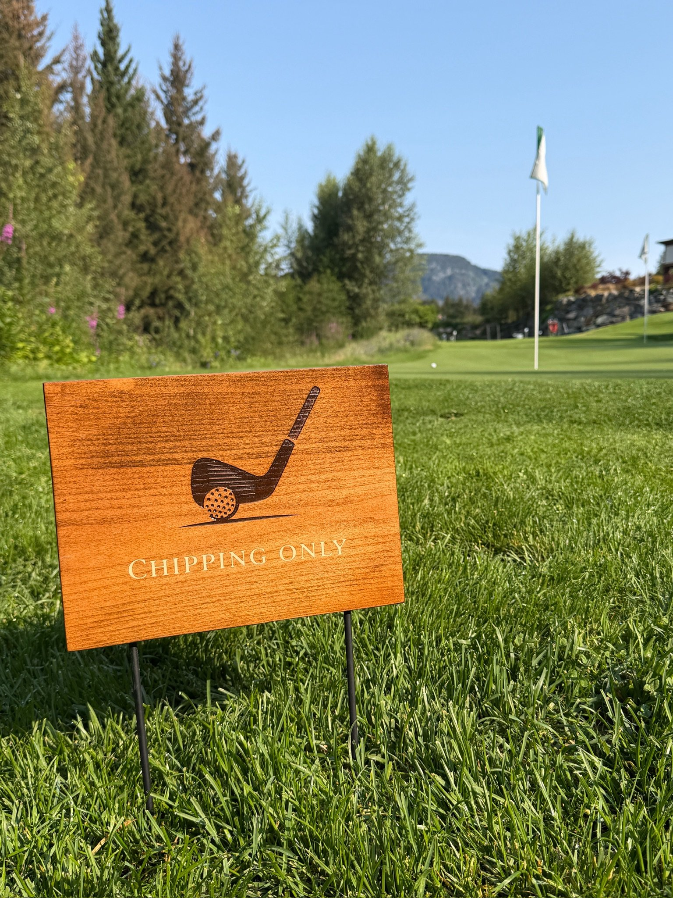
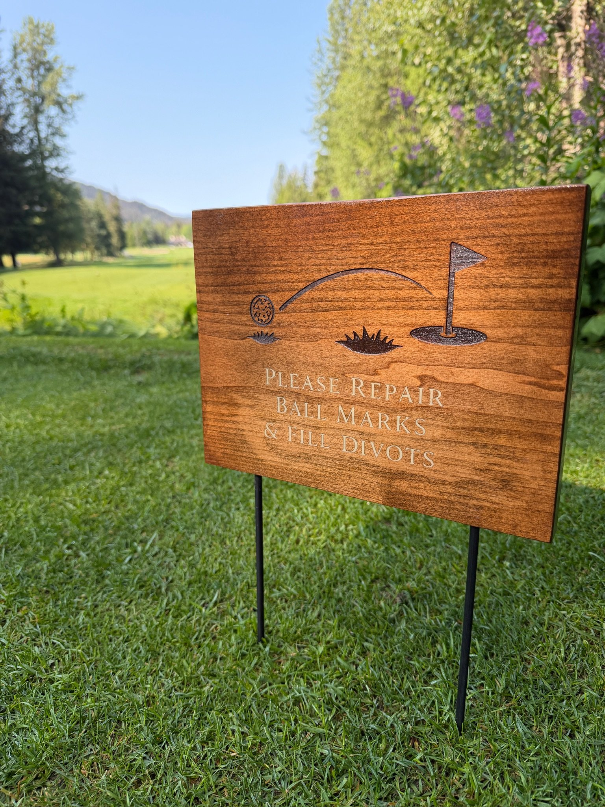
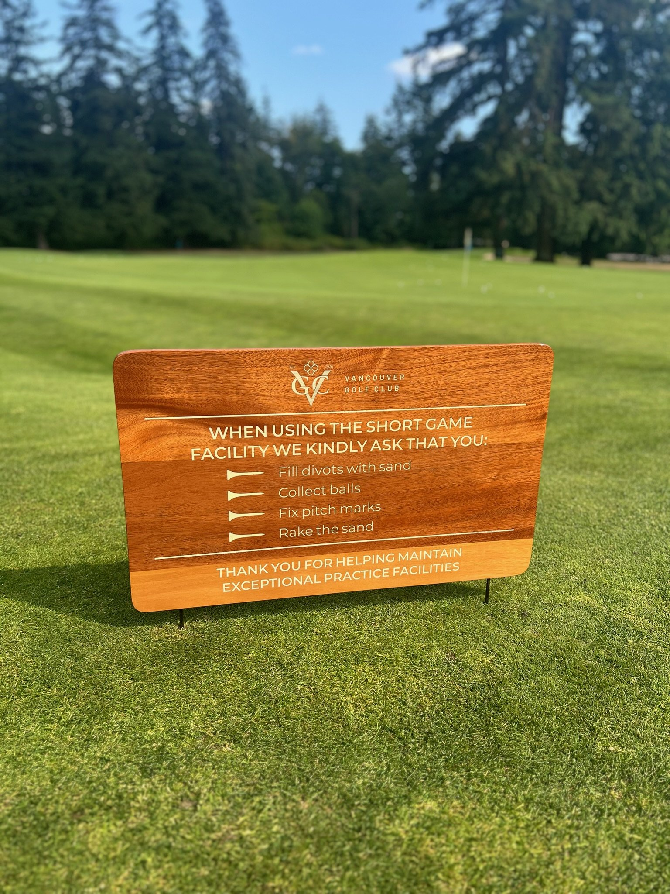
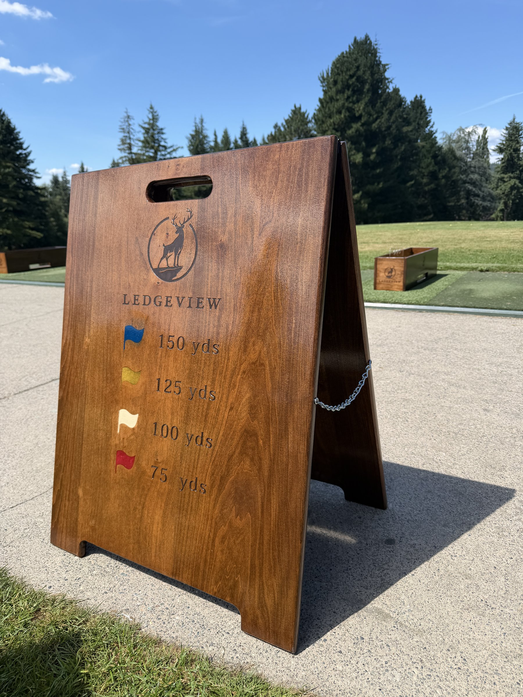

Course signage
Wayfinding and course identity, designed for your property.


Designed as part of the course
Course signage designed and built as part of a complete course commission. Our starter stations, wayfinding signs, hole identification markers, and course entry pieces are crafted in timber with engraved branding. Each piece is designed to reflect the character of your property.
Our signage is built from locally sourced hardwoods, CNC-fabricated for precision and hand-finished for warmth and texture. Construction options include solid timber panels, A-frame structures, and post-mounted formats, with finishes ranging from natural grain to charred treatments. Engraving covers club logos, hole numbers, directional graphics, cart path instructions, etiquette guidelines, and restroom wayfinding.





Signage commissions are often part of a broader course package that includes tee markers, yardage markers, and accessories. When multiple product types are commissioned together, we develop a unified material palette across all elements so that every sign, marker, and furnishing on the property reads as part of a cohesive design system. Standalone signage commissions are equally welcome.
The commission process begins with a discussion of your signage needs. We assess wayfinding requirements, branding standards, and physical conditions to develop sign concepts that serve both form and function. Production includes CNC fabrication, hand-finishing, and quality inspection at our Vancouver studio. All signage is shipped ready to install. We deliver across North America and internationally.
Interested in commissioning signage for your course?
Email us to start →